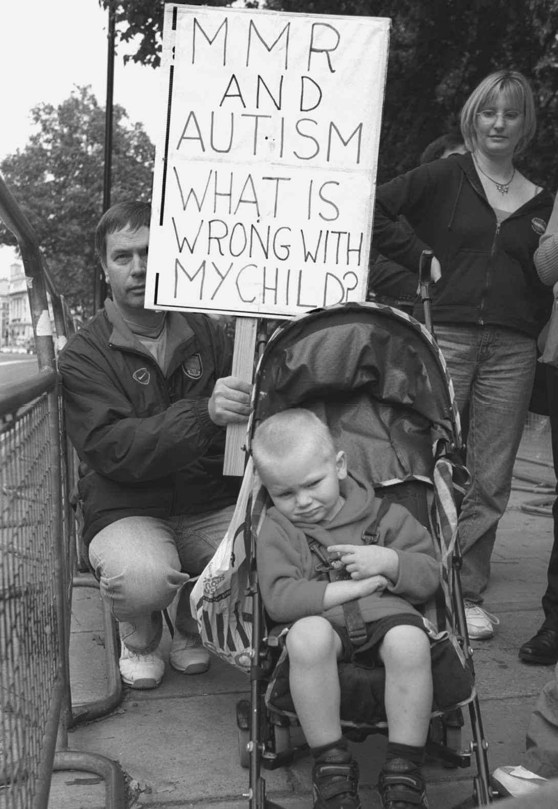

在生命的第二年发生什么不同寻常甚至可能是创伤性的事件会导致这个问题？注射疫苗！疫苗一直是引人质疑的东西。疫苗的自身特性就是攻击幼儿弱小的身体。为了预防疾病，疫苗以轻微的形式激发某种疾病。症状很短暂，几乎所有健康儿童都会很快摆脱这些症状。但也有极少见的病例会出差错，很大的差错，结果甚至会带来大脑损伤。现在如果疫苗注射累积，风险是不是会更大呢？恰好，近来引入了这样的多重疫苗。在很多国家，有医疗政策用一次疫苗注射来保护大众免于三种致命疾病—麻疹、流行性腮腺炎及风疹，此即MMR三联疫苗。

图6 家长担心自闭症和麻疹、流行性腮腺炎及风疹混合疫苗（MMR）之间有关联，图为他们的示威（图上的标语：MMR与自闭症：我的孩子怎么了？）
这种三联疫苗是否可能跟自闭症增长有关系？这个推论清晰、合理，绝对值得探讨。其实世界范围内已有相当数量的研究在大力探讨了。这些研究几乎一致得出完全否定的答案。一项又一项的研究表明，自闭症的增长远在三联疫苗引入之前就开始了。疫苗的引入并未伴随着自闭症病例的急遽增长。最后的压倒性证据是：日本在撤销MMR三联疫苗后，自闭症谱系障碍病例的增长并未停止。简而言之，这个疫苗不应为自闭症病例增长负责。
专家们钻研了个人病例的医疗记录，发现很多记录上，有人在注射疫苗之前就担心儿童发育。尽管媒体已报道出负面结果，仍然会涌现出其他疑问和反对观点。实际上，大众对疫苗的担心仍未消失。是政府和大型制药公司出来压制了真相，推卸了责任？面对强大公司的辩护，个人有没有机会得到倾听？而另一方面，律师们会不会一丝不苟地利用这个疑问去索要补偿？掩盖真相和贪婪都有过先例。既然有过公众担保出错的丑闻，政治家们模棱两可的态度就不难理解，到底站在科学家一边还是家长的压力团体一边，他们也很头疼。
但让人担忧的不只是三联疫苗。硫汞撒是汞的一种衍生物，自1930年代以来直到最近，都被用于保存疫苗和其他药物的有效的防腐剂，1999年后已经被淘汰了。汞是重金属，并且有毒，因为大脑易受重金属感染，似乎这也有可能导致自闭症。这又是一个值得探究的想法。美国和日本，尤其是日本的科学家们对此非常重视，而日本由于金属污染刚发生过严重的环境灾难。通过比较在汞中暴露过的孩子和没有暴露过的孩子，研究者们能够把汞中毒排除在自闭症成因之外。并且在加州，疫苗保存不使用硫汞撒后，自闭症病例仍持续增加。然而，这种想法仍挥之不去，很多网站专注于这个事例，包括那些提供去除体内重金属残留治疗的网站，而这些去除方法本身就是有害的。
正如三联疫苗的例子一样，有些人太执著于有关硫汞撒的说法，顽固而不肯变通。他们看不到驳斥这些说法的相关科学研究。这也表明，其他未知的恐吓任何时候都可能开始，让这些抗议者们终身为之呼号。
当然，关于可能导致自闭症的环境因素，可能会有更多想法。但这些想法需要用基础研究来确认，而基础研究尚未抛出一个可信的候选因素。从另一方面来说，关于可能致病因素的那些不切实际的想法，尚未得到基础研究确认，或许会浪费非常多的时间和精力。